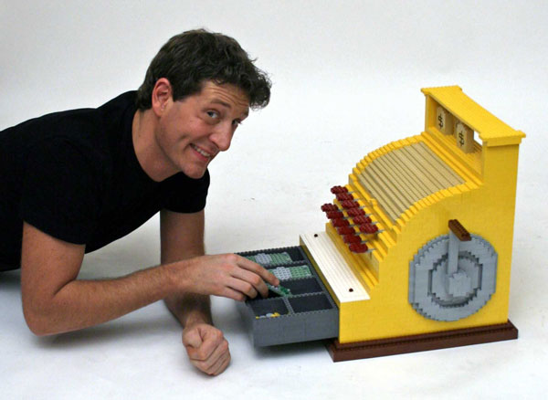

#244328 314 2006-10-22T07:20:57Z Orange 1. User episodes
2. Ned button on main menu
3. This has been floating around in my mind for a while. How about adding the ability to crawl? You already have the wallsliding animation, all you'd need to do would be to add a few extra to make it look like he's crawling. You would press or hold down, and you would be able to go through spaces half a tile high. Yay or nay? I know about the quote at the top of the page, but I just think it would be cool.
#254929 34 2006-11-15T05:54:42Z Orange No... probably since everyone (or almost everyone) at my school plays it, which may or may not be a good thing.
#256413 6 2006-11-18T10:20:21Z Orange I look for an N tileset in anything in real-life.
Pretty much the same for me I guess.
#256425 89 2006-11-18T11:33:12Z Orange A little. Only 3 of my maps have public ratings, but I'm happy with the comments and ratings on my last 4-5 maps (4s and 4.5s).
#258431 31 2006-11-23T06:47:25Z Orange 4. But I doubt it's what I deserve, due to overrated maps and me having only three rated maps.
#262532 35 2006-12-01T09:25:06Z Orange Mercedes SLR McLaren. Yeah.
#262583 33 2006-12-01T14:08:26Z Orange #264834 10 2006-12-05T09:19:16Z Orange You call that orange?

That's orange.
#271277 25 2006-12-16T10:47:10Z Orange #271550 16 2006-12-16T23:20:06Z Orange All of them.

I had the most trouble with the 80s column, so I did that last.
#272020 30 2006-12-17T10:09:24Z Orange Off. There's really no reason to keep it on, except for chainguns - but that's just a minor nuisance.
#272644 24 2006-12-18T00:55:03Z Orange And finally beating MTI after about 6 months was truly incredible...
6 months? It only took me about a day. Or did you mean it took you 6 months to get up to MTI and beat it, from scratch?
#272764 12 2006-12-18T04:37:09Z Orange 35 submitted, and I have made in excess of 500.
10:1+.
#273261 5 2006-12-19T04:54:31Z Orange How do you plan on getting the prizes to the winners?
Shhh...
#273365 20 2006-12-19T12:36:45Z Orange 00, 10, 20, 30, 40, 90, 70, 60, 50, 80.
Yeah. I was stuck on the 80s after beating the 90s, so I decided to go in reverse.
#273421 39 2006-12-19T16:32:03Z Orange I used to frequent a forum where post count was removed, to stop spammers and the like. A lot of people became angry at the change, and one obsessed member even left, but it was for the better. He left solely because of the removal, meaning he didn't care about the content of the forum, but just posted to get his count up. Sad, really. Anyway, people adapted to the change fairly quickly, and after a week everything was back to normal. This forum probably doesn't require such a drastic change, but if all else fails I think it would an option to consider.
#273745 24 2006-12-20T04:57:01Z Orange Possibly, exuberance.
This sounds like a very cool idea. I'm in if it actually takes off.
#275709 880 2006-12-23T13:51:26Z Orange Quote: IRC
* krusch was kicked by krusch (Go the fuck to bed, dude.)
#276237 3441 2006-12-24T02:39:44Z Orange #277246 30 2006-12-26T02:51:05Z Orange JUDGING TIME!
qlexx (first map) - The Rugged Road to Freedom
Creativity - 5/10
The map felt like pretty much any other prisoner map. The interesting parts were at the end and the middle, and the way you sent the drones to a new area. Otherwise quite bland.
Map Quality - 16/20
The mechanism was almost flawless, except for the second two drones where you could cheat. I liked the overall style, and apart from some minor flaws, a great map.
Total: 21/30 points
Evil_Bob (first map) - Scissor Heist
Creativity - 8/10
This map was really a change from the ordinary. The first part took some tries, but it was a nice, unique, Prisoner-style section. The last seciton was interesting too, although cheatable.
Map Quality - 14/20
Basically the same as for the above map.
Total: 22/30 points
#277841 33 2006-12-28T03:28:10Z Orange JUDGING
Yahoozy (first map) - PrizN; cellmate #559
Creativity - 9/10
A heap of very interesting parts in this one, especially the rocket at the start and having to activate the trapdoors before the drones got to them. Excellent in this aspect.
Map Quality - 18/20
A very high quality map. The tileset and objects were mostly well placed, but there were a few minor flaws.
Total: 27/30 points
Evil_Bob (second map) - Asylum Route 66
Creativity - 8/10
It seems everyone is trying to make the most creative map possible (as is expected, of course). This map has a variety of nice tricks, although a few were unneeded. The optional section at the end was a first and very well executed.
Map Quality - 16/20
I liked most of the mechanisms in this map. It wasn't as open or as fast as Yahoozy's, but it was a good, classic Prisoner map.
Total: 24/30 points
#278275 38 2006-12-29T05:40:50Z Orange Hey, am I the only one judging? I'll only judge two today.
rocket_thumped (first map) - Drilling for the Fix
Creativity - 6/10
Not so many new endeavors here, except for the falling sections and the chaingun section. It's also good in the cheatability aspect; it looks cheatable, but it's not.
Map Quality - 19/20
Good tileset, good objects, well planned out... very fun and stylish. Near flawless.
Total: 25/30 points
spiker5 (first map) - Nova Prospekt
Creativity - 6/10
Once again, not so many new things that should be noted. Cheatable in one place, but nice mechanisms for the rest of it.
Map Quality - 17/20
The tileset felt a bit bland, but otherwise a good map.
Total: 23/30 points
#278728 36 2006-12-30T06:28:25Z Orange I'll take 18.
#279891 43 2007-01-02T00:00:21Z Orange I couldn't be screwed with a screenshot. Live with the txt.
Attachment (lost): post-10-1167696021.txt
#279896 45 2007-01-02T00:18:11Z Orange Don't be sorry. Just put it in a .txt, because the data screwed up.
#280004 46 2007-01-02T04:45:31Z Orange <insert pre-judging comment here>
29403 (first map) - 88209
Creativity - 4/10
The creativity in this map was really quite average. There were no new interesting spots, just repetitive wandering through tunnels.
Map Quality - 13/20
The quality of the map was good, although both the second and third drone sections were cheatable. Not very Prisoner-like. I liked the gausses and the other miscellaneous enemies, however.
Total: 17/30 points
bhauth (first map) - Introspective
Creativity - 4/10
Although the level was interesting, it was not a Prisoner. It was more of a run-through-the-corridor-and-dodge-the-rocket. You shouldn't be afraid of straying from the prisoner aspect, but don't completely disregard the point of the genre.
Map Quality - 16/20
The map, however, was quite entertaining. It was a good challenge to dodge the rocket, and the bounceblocks at the end were very fun.
Total: 20/30 points
#281351 33 2007-01-05T01:24:27Z Orange 1337
#286198 2 2007-01-15T23:56:14Z Orange OLD
But still a funny and informative little flash.
Heh...
#286420 24 2007-01-16T13:41:06Z Orange See, people like orange(no offense) rate maps five after a minute of playing.
Generalization much? I merely enjoyed that map very much.
#287100 11 2007-01-18T10:52:00Z Orange Orange ftw.
See, this here is good talk.
My ninja is some contrived, convoluted and chlorinated lime-aqua-maroonish colour. It's hard to explain.
#287740 27 2007-01-20T06:23:21Z Orange This thread ranks high on my win meter.
#287767 143 2007-01-20T09:50:48Z Orange I think that's twenty, and I have about half the pack to go. Oh well, I tried. Well done to all the finalists.
#288632 9 2007-01-22T05:25:00Z Orange Actually, when the drone goes like that, it's not going to move, no way, not at all. So no, you wouldn't be able to get out even if you opened the door, Blizz.
No, it will. That only happens with locked doors.
EDIT: Never mind.
#335124 2 2007-06-24T04:31:34Z Orange You win.
#388001 2 2007-12-10T08:10:37Z Orange It's revolutionary.
Trust us.
It'll blow you away.
#388016 10 2007-12-10T09:12:40Z Orange Obviously not every level is the same, just as not every fool is unintelligent. Most are, however...
#388019 12 2007-12-10T09:39:56Z Orange I got one different level, and its nothing special. Am i missing something here?
Are you saying the people you got inspiration from are repetitive and bland?
Congratulations.
But now, it is up to you to figure out what that means.
You are on your own.
#388251 21 2007-12-11T04:48:53Z Orange I've lost a lot of respect for you guys.
This whole thing comes off as elitist to me.
It's not elitist. It's symbolic. It's not my job to tell you what it means.
#388261 23 2007-12-11T05:48:14Z Orange It's not elitist.
Yes, it is.
It's symbolic.
Debatable.
It's not my job to tell you what it means.
Actually, it is.
Worst pin ever? Probably. Oh, except for those flag pins. Man I hate those.
Explain why this is elitist.
If you can't figure out the pack's meaning, I'm not going to tell you, nor is anyone else.
#388267 26 2007-12-11T05:57:34Z Orange Explain why this is elitist.
If you can't figure out the pack's meaning, I'm not going to tell you, nor is anyone else.
You sort of answered your own quandry.
I believe Msyjsm finds this pack inaccessible insofar as its meaning being purposely obtuse.
I'll refrain from expressing my own opinions though.
What would you prefer, then: being spoon-fed the answer, or attempting to find all the hidden eggs yourself, thus increasing your enjoyment? The pack is merely a diverge from the normal style. It doesn't have to all be about the maps.
#388284 30 2007-12-11T06:45:16Z Orange P:
This map pack is a map pack. This is not debatable.
All things are symbols for other things. For example: The word "chair" is a symbol for the device we use for sitting, which is itself a symbol for oppression. All things are symbols; therefore this map pack is symbolic. This is not debatable.
This map pack is not "elitist". That word is meaningless, and people use it without considering its meaning (of which it has none). "Elite" defines things which are exclusive or available only to a select few. This map pack is in no way exclusive and may be freely used by anyone. This map pack is not elitist. This is not debatable.
It is not our job to tell you what things mean. Television, your teachers, advertisements, your lawmakers. These things are already telling you what to think. Do you really need anyone else to serve this purpose? The answer is no. This is not debatable.
I made no maps for this set. Orange made no titles for this set. solarion made no poems for this set. No one made this set. This is not debatable.
Ergo Q:
This map pack is not debatable.
Well said.
#20427 1 2008-06-04T08:12:07Z Orange BlckNWhteNnja (BNW), a new member to the N IRC, and fractalp, a relatively old member of the N IRC, displayed here in the ultimate battle of wits and strength.
Orange raises a juicy limb to the heavens and calls forth a deluge, such of strength that the feet of the bystanders are swept from beneath their bodies! Orange forms into a ball of hardened caesium and withstands the mighty blows of the water, before realising caesium is part of the alkali metals. The hydrogen gas explodes as it erupts into the bedraggled atmosphere, and as the waters clear, the shaken remnants of a heroic orange become visible, strewn throughout the flooded terrain.
A shadowy figure appears at the far end of the battlefield, cloak awry and sunglasses askew. It is BNW, bringer of pain. BNW withdraws a long, thin instrument from the infinite recesses of his hooded anorak. It is his dong. BNW wields his mighty dong with both hands and stares Fractal right in the eye.
"Let's dance."
Fractal does not bat an eyelid, whipping out a hefty b&hammer. Fractal begins to charge, feet pounding through the crackling remnants of Orange. BNW anticipates the attack and shimmies aside, then leaps into the air using his dong as propulsion. Fractal uses his b&hammer to cancel previous momentum, then swings around in a vicious scythe. The edge catches BNW on the thigh, and he screams as part of his skin is permabanned from the IRC.
In a state of apoplectic rage, BNW thrusts his pelvic muscles and stabs Fractal in the left arm, inducing a howl of pain. Despite this, Fractal's right hand remains in steadfast grip on the handle of his b&hammer. Fractal smiles wryly as BNW touches down lightly on the ground. He holds his b&hammer to the sky and utters a heavenly chant.
The b&hammer begins to glow with a dazzling, unearthly white beam, and BNW is forced to shield
his eyes with his massive dong. Fractal roars in glee as the fully charged power of the b&hammer slams BNW in the chest, and his wracked body is flung to the far reaches of the cobbled street.
BNW's hand flings up his chest, and he struggles for breath. The smooth touch of the lazer-repellent body armour provides instant reassurance, and with scarcely time for pause, BNW arises. Fractal stares
into the sky, hands clasped in prayer, thanking the gods for allowing their power to be channelled through his body.
At that moment, he feels a sharp, gutting pain in his abdominal region. BNW smiles as Fractal stares down in horror at the wound in his stomach. A shaking hand wipes away a smidge of blood, and Fractal locks eyes with BNW. BNW's lips deliver a final message, before the final slashing blow that separates Fractal's head from his body.
"OWNED BITCH"
The end.
#442697 7 2008-06-07T14:15:08Z Orange Orange I can't believe you put this on here. That battle was epic!
I think that maestro was getting mad when you started making this up in the IRC.
To anyone who wants to know, this was a story that Orange was telling about fractal and Impulse on the IRC, but when Impulse got mad about it, Orange changed it to maestro, yet he wouldn't have anything to do with it, so Orange selected me and went about finishing it. Just don't take it to literally. We were having fun and Orange just wants to share it.
Actually it began with maestro and Impulse, then Impulse became BNW and maestro became fractal - the reasons being maestro didn't want his name to be pinged, and Impulse disliked the shape of his fictional dong.
#444778 8 2008-06-15T13:33:01Z Orange Thanks man! Now, when I'm looking for someone to trust, I'll know who to pick!
#444789 16 2008-06-15T13:47:29Z Orange You know what will happen when Atra actually dies?
...
"hai guise im dead again lol"
#444812 28 2008-06-15T14:16:51Z Orange Quote: maestro, June 16, 2008 01:15 am
Майка ти е сляпо майка ти е сляпо майка ти е сляпо майка ти е сляпо майка ти е сляпо майка ти е сляпо
смее се на всички вас момчетата които говорят за мен, както, ако трябва грижи за това, което казват и мислят.
#444817 32 2008-06-15T14:20:09Z Orange #444820 35 2008-06-15T14:25:13Z Orange Аз съм направи китка на картите, които се представят посмъртно и кажете един човек да тайландски Велико история, когато в действителност
го умират. По този начин, когато умира, той изглежда като фалшив Atra, както и смъртта на хората disbelieve то в продължение на две цели години.

Angrywrench го прави за пари. Го прави за пари. Го прави за пари. Го прави за пари. Го прави за пари. Го прави за пари. Го прави за пари. Го прави за пари. Го прави за пари. Го прави за пари. Го прави за пари. Го прави за пари. Го прави за пари. Го прави за пари. Го прави за пари. Го прави за пари. Го прави за пари. Го прави за пари. Го прави за пари. Го прави за пари. Го прави за пари. Го прави за пари. Го прави за пари. Го прави за пари. Го прави за пари. Го прави за пари. Го прави за пари. Го прави за пари. Го прави за пари. Го прави за пари. Го прави за пари. Го прави за пари. Го прави за пари. Го прави за пари. Го прави за пари. Го прави за пари. Го прави за пари. Го прави за пари. Го прави за пари. Го прави за пари. Го прави за пари.

PONIESPONIESPONIESPONIESPONIESPONIESPONIESPONIESPONIESPONIESPONIESPONIESPONIESPONIESPONIESPONIESPONIESPONIESPONIESPONIESPONIESPONIESPONIESPONIESPONIESPONIESPONIESPONIESPONIESPONIESPONIESPONIESPONIESPONIESPONIESPONIESPONIESPONIESPONIESPONIESPONIESPONIESPONIESPONIESPONIESPONIESPONIESPONIESPONIESPONIESPONIESPONIESPONIESPONIESPONIESPONIESPONIESPONIESPONIESPONIESPONIESPONIES
lol @ all you guys who talk to me as if I should care about what you say and think. 
brb, makin' a map for NUMA (which is looking really nice, by the way. I haven't been on there since it was the shabby old grey thing.)
PS. ProTip: DDRave is the only person here who knows how to treat the interent like the internet. 

nipple, nipple, haah, nipple, nipple

#444831 43 2008-06-15T14:38:28Z Orange THIS IS
MADNESS
#444836 47 2008-06-15T14:46:32Z Orange <blue_tetris> Orange, no more pop culture memes.

<blue_tetris> Orange, cultu memes re no more.
ORANGE NOT MORE BLUE CULTURE POP TETRIS MEMES
ORANFE TETRIS POP MEMES BLUE CULTURE MORE NOT memes.<blue_tetris> Orange, no more pop culture memes.<blue_tetris> Orange, no more pop culture memes.<blue_tetris> Orange, no more pop culture m

#444854 60 2008-06-15T15:05:26Z Orange #444857 63 2008-06-15T15:07:24Z Orange Atramentis as of 1 minute ago:
#444867 73 2008-06-15T15:10:25Z Orange **** you, you ****. Ho can you ****ing do that to us? That's so morally ****ed up.
#444874 80 2008-06-15T15:13:18Z Orange I've missed you so much. Welcome back!
#446983 1644 2008-06-21T03:48:49Z Orange #449925 5 2008-07-01T07:00:18Z Orange You have a choice. If you do it, you've lost not only the bad of life, but the good as well. Push through. If you endure the darkness, there will be light. I know it's a cliche, but it's a cliche because it's true.
Don't waste your time thinking about the bad times. Enjoy the good times while they last. At the end of it all, life is about enjoying yourself, regardless of religion or beliefs. No matter how terrible it may seem now, you have to focus on the good that comes of it.
Suicide helps no one. Make the right choice.
#21563 1 2008-09-21T13:49:00Z Orange It IS here.
It IS called Guard Rails and Apparitions.
It DOES have a Superprotective Guard Rail.
It IS Orange's first map pack.
It IS an assortment of fifty random maps in no particular order.
It is NOT better than lord_day's.
It is NOT better than Pawz & Fretzy's.
It IS something for you to enjoy.
Attachment (lost): post-49-1222004940.txt
#473995 205 2008-09-28T11:51:26Z Orange THIS THREAD IS FUNNY


")